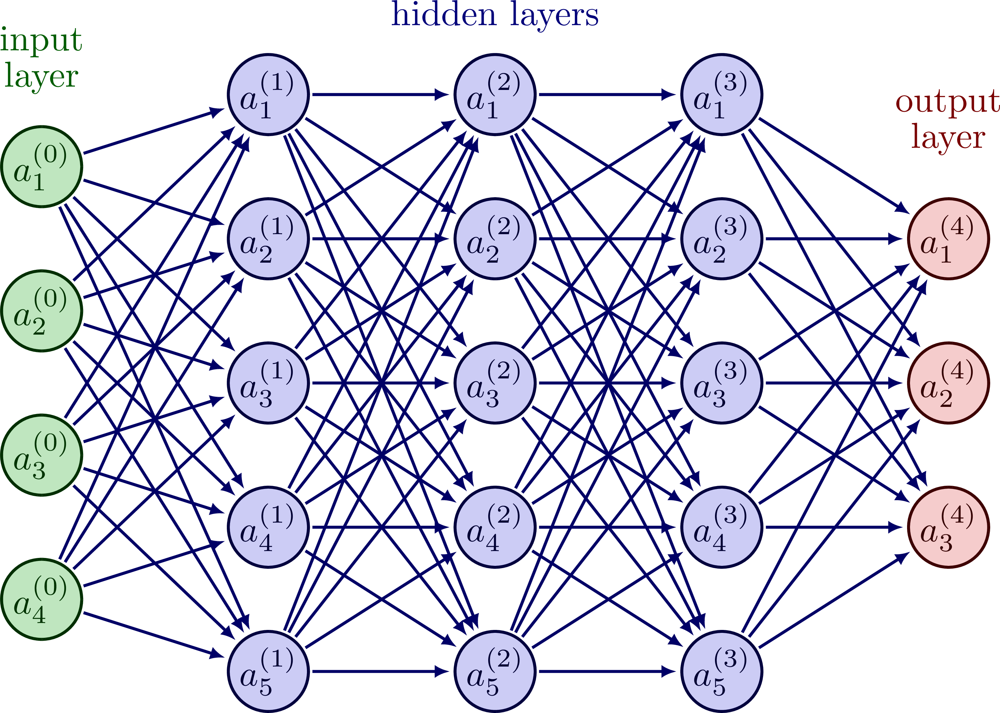

Neural Network is a biologically inspired artificial neural network that mimics the working principles of neurons in the brain.
It is composed of input, hidden, and output layers, and each layer consists of multiple neurons.
In the input layer, external information is received, and in the hidden layer, the input information is processed.
In the output layer, the final result is output, and this result is adjusted through learning.
For more information, please check out the About page.
Press the button below to train a neural network.
The structure of a neural network can vary depending on its purpose, but the basic structure consists of input, hidden, and output layers.
The number of neurons in each layer can also vary depending on the complexity of the problem being solved.
For more information on the structure of a neural network, please visit the Wikipedia page.
Neural network training involves adjusting the weights and biases of the neurons to minimize the error between the predicted output and the actual output.
The most common training method is backpropagation, which involves propagating the error backwards through the network and adjusting the weights and biases accordingly.
For more information on neural network training, please visit the Wikipedia page.
Neural networks are widely used in various fields such as image recognition, natural language processing, speech recognition, and recommendation systems.
For more information on neural network applications, please visit the Wikipedia page.
인공지능융학과 20202847 김진용은 인공지능 분야에 대한 관심과 지식을 바탕으로 이 웹사이트를 개발하였습니다. 이 홈페이지는 다양한 사용자들에게 신경망에 대한 정보를 제공하기 위해 만들어졌습니다.